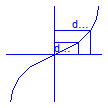

Anton Haumer
Technical Consulting & Electrical Engineering
A-3423 St.Andrae-Woerdern, Austria
email: a.haumer@haumer.at
Dr. Christian Kral
Austrian Institute of Technology, AIT
Giefinggasse 2
A-1210 Vienna, Austria
Copyright © 1998-2010, Modelica Association, Anton Haumer and Austrian Institute of Technology, AIT.
This Modelica package is free software and the use is completely at your own risk; it can be redistributed and/or modified under the terms of the Modelica License 2. For license conditions (including the disclaimer of warranty) see Modelica.UsersGuide.ModelicaLicense2 or visit http://www.modelica.org/licenses/ModelicaLicense2.
Extends from Modelica.Icons.Package (Icon for standard packages).
| Name | Description |
|---|---|
| SimpleFriction | Simple friction model |
| Partial model of two port | |
| Partial model of ambient | |
| AbsoluteSensor | Partial model of absolute sensor |
| Partial model of relative sensor | |
| Partial model of flow sensor |

| Type | Name | Default | Description |
|---|---|---|---|
| Simple Friction | |||
| VolumeFlowRate | V_flowLaminar | Laminar volume flow [m3/s] | |
| Pressure | dpLaminar | Laminar pressure drop [Pa] | |
| VolumeFlowRate | V_flowNominal | Nominal volume flow [m3/s] | |
| Pressure | dpNominal | Nominal pressure drop [Pa] | |
| Real | frictionLoss | 0 | Part of friction losses fed to medium |
partial model SimpleFriction "Simple friction model"
parameter Modelica.SIunits.VolumeFlowRate V_flowLaminar(min=Modelica.Constants.small, start=0.1)
"Laminar volume flow";
parameter Modelica.SIunits.Pressure dpLaminar(start=0.1)
"Laminar pressure drop";
parameter Modelica.SIunits.VolumeFlowRate V_flowNominal(start=1)
"Nominal volume flow";
parameter Modelica.SIunits.Pressure dpNominal(start=1)
"Nominal pressure drop";
parameter Real frictionLoss(min=0, max=1) = 0
"Part of friction losses fed to medium";
Modelica.SIunits.Pressure pressureDrop;
Modelica.SIunits.VolumeFlowRate volumeFlow;
Modelica.SIunits.Power Q_friction;
protected
parameter Modelica.SIunits.Pressure dpNomMin=dpLaminar/V_flowLaminar*V_flowNominal;
parameter Real k(final unit="Pa.s2/m6", fixed=false);
initial algorithm
assert(V_flowNominal>V_flowLaminar,
"SimpleFriction: V_flowNominal has to be > V_flowLaminar!");
assert(dpNominal>=dpNomMin,
"SimpleFriction: dpNominal has to be > dpLaminar/V_flowLaminar*V_flowNominal!");
k:=(dpNominal - dpNomMin)/(V_flowNominal - V_flowLaminar)^2;
equation
if volumeFlow > +V_flowLaminar then
pressureDrop = +dpLaminar/V_flowLaminar*volumeFlow + k*(volumeFlow - V_flowLaminar)^2;
elseif volumeFlow < -V_flowLaminar then
pressureDrop = +dpLaminar/V_flowLaminar*volumeFlow - k*(volumeFlow + V_flowLaminar)^2;
else
pressureDrop = dpLaminar/V_flowLaminar*volumeFlow;
end if;
Q_friction = frictionLoss*volumeFlow*pressureDrop;
end SimpleFriction;
 Modelica.Thermal.FluidHeatFlow.Interfaces.Partials.TwoPort
Modelica.Thermal.FluidHeatFlow.Interfaces.Partials.TwoPort

| Type | Name | Default | Description |
|---|---|---|---|
| Medium | medium | FluidHeatFlow.Media.Medium() | Medium in the component |
| Mass | m | Mass of medium [kg] | |
| Temperature | T0 | Initial temperature of medium [K] | |
| Real | tapT | 1 | Defines temperature of heatPort between inlet and outlet temperature |
| Type | Name | Description |
|---|---|---|
| FlowPort_a | flowPort_a | |
| FlowPort_b | flowPort_b |
partial model TwoPort "Partial model of two port"
parameter FluidHeatFlow.Media.Medium medium=FluidHeatFlow.Media.Medium()
"Medium in the component";
parameter Modelica.SIunits.Mass m(start=1) "Mass of medium";
parameter Modelica.SIunits.Temperature T0(start=293.15, displayUnit="degC")
"Initial temperature of medium";
parameter Real tapT(final min=0, final max=1)=1
"Defines temperature of heatPort between inlet and outlet temperature";
Modelica.SIunits.Pressure dp=flowPort_a.p - flowPort_b.p "Pressure drop a->b";
Modelica.SIunits.VolumeFlowRate V_flow=flowPort_a.m_flow/medium.rho
"Volume flow a->b";
Modelica.SIunits.HeatFlowRate Q_flow "Heat exchange with ambient";
output Modelica.SIunits.Temperature T(start=T0)
"Outlet temperature of medium";
output Modelica.SIunits.Temperature T_a=flowPort_a.h/medium.cp
"Temperature at flowPort_a";
output Modelica.SIunits.Temperature T_b=flowPort_b.h/medium.cp
"Temperature at flowPort_b";
output Modelica.SIunits.TemperatureDifference dT=if noEvent(V_flow>=0) then T-T_a else T_b-T
"Temperature increase of coolant in flow direction";
protected
Modelica.SIunits.SpecificEnthalpy h = medium.cp*T
"Medium's specific enthalpy";
Modelica.SIunits.Temperature T_q = T - noEvent(sign(V_flow))*(1 - tapT)*dT
"Temperature relevant for heat exchange with ambient";
public
Interfaces.FlowPort_a flowPort_a(final medium=medium);
Interfaces.FlowPort_b flowPort_b(final medium=medium);
equation
// mass balance
flowPort_a.m_flow + flowPort_b.m_flow = 0;
// energy balance
if m>Modelica.Constants.small then
flowPort_a.H_flow + flowPort_b.H_flow + Q_flow = m*medium.cv*der(T);
else
flowPort_a.H_flow + flowPort_b.H_flow + Q_flow = 0;
end if;
// massflow a->b mixing rule at a, energy flow at b defined by medium's temperature
// massflow b->a mixing rule at b, energy flow at a defined by medium's temperature
flowPort_a.H_flow = semiLinear(flowPort_a.m_flow,flowPort_a.h,h);
flowPort_b.H_flow = semiLinear(flowPort_b.m_flow,flowPort_b.h,h);
end TwoPort;
Partial model of (Infinite) ambient, defines pressure and temperature.
| Type | Name | Default | Description |
|---|---|---|---|
| Medium | medium | FluidHeatFlow.Media.Medium() | Ambient medium |
| Type | Name | Description |
|---|---|---|
| FlowPort_a | flowPort |
partial model Ambient "Partial model of ambient"
parameter FluidHeatFlow.Media.Medium medium=FluidHeatFlow.Media.Medium()
"Ambient medium";
output Modelica.SIunits.Temperature T "Outlet temperature of medium";
output Modelica.SIunits.Temperature T_port=flowPort.h/medium.cp
"Temperature at flowPort_a";
protected
Modelica.SIunits.SpecificEnthalpy h = medium.cp*T;
public
Interfaces.FlowPort_a flowPort(final medium=medium);
equation
// massflow -> ambient: mixing rule
// massflow <- ambient: energy flow defined by ambient's temperature
flowPort.H_flow = semiLinear(flowPort.m_flow,flowPort.h,h);
end Ambient;

| Type | Name | Default | Description |
|---|---|---|---|
| Medium | medium | FluidHeatFlow.Media.Medium() | Sensor's medium |
| Type | Name | Description |
|---|---|---|
| FlowPort_a | flowPort | |
| output RealOutput | y |
partial model AbsoluteSensor "Partial model of absolute sensor"
parameter FluidHeatFlow.Media.Medium medium=FluidHeatFlow.Media.Medium()
"Sensor's medium";
Interfaces.FlowPort_a flowPort(final medium=medium);
Modelica.Blocks.Interfaces.RealOutput y;
equation
// no mass exchange
flowPort.m_flow = 0;
// no energy exchange
flowPort.H_flow = 0;
end AbsoluteSensor;
 Modelica.Thermal.FluidHeatFlow.Interfaces.Partials.RelativeSensor
Modelica.Thermal.FluidHeatFlow.Interfaces.Partials.RelativeSensor

| Type | Name | Default | Description |
|---|---|---|---|
| Medium | medium | FluidHeatFlow.Media.Medium() | Sensor's medium |
| Type | Name | Description |
|---|---|---|
| FlowPort_a | flowPort_a | |
| FlowPort_b | flowPort_b | |
| output RealOutput | y |
partial model RelativeSensor "Partial model of relative sensor"
parameter FluidHeatFlow.Media.Medium medium=FluidHeatFlow.Media.Medium()
"Sensor's medium";
Interfaces.FlowPort_a flowPort_a(final medium=medium);
Interfaces.FlowPort_b flowPort_b(final medium=medium);
Modelica.Blocks.Interfaces.RealOutput y;
equation
// no mass exchange
flowPort_a.m_flow = 0;
flowPort_b.m_flow = 0;
// no energy exchange
flowPort_a.H_flow = 0;
flowPort_b.H_flow = 0;
end RelativeSensor;
Modelica.Thermal.FluidHeatFlow.Interfaces.Partials.FlowSensor
Extends from TwoPort (Partial model of two port).
| Type | Name | Default | Description |
|---|---|---|---|
| Medium | medium | FluidHeatFlow.Media.Medium() | Medium in the component |
| Mass | m | 0 | Mass of medium [kg] |
| Temperature | T0 | 0 | Initial temperature of medium [K] |
| Real | tapT | 1 | Defines temperature of heatPort between inlet and outlet temperature |
| Type | Name | Description |
|---|---|---|
| FlowPort_a | flowPort_a | |
| FlowPort_b | flowPort_b | |
| output RealOutput | y |
partial model FlowSensor "Partial model of flow sensor" extends TwoPort(final m=0, final T0=0, final tapT=1);Modelica.Blocks.Interfaces.RealOutput y; equation // no pressure drop dp = 0; // no energy exchange Q_flow = 0;end FlowSensor;